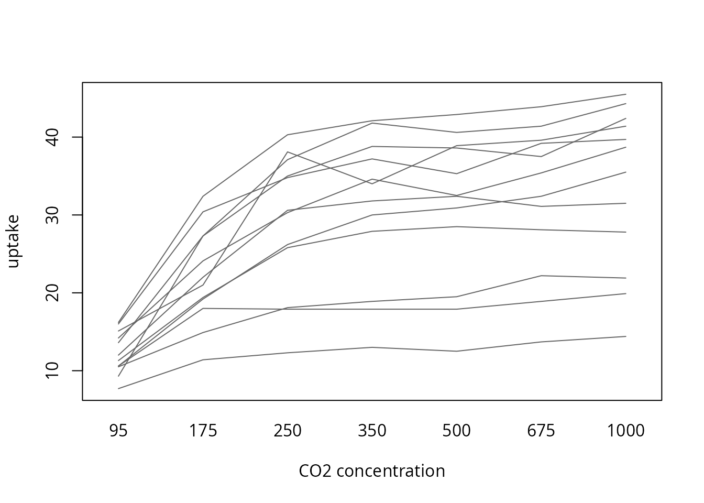

Description
This shows the output of compute_friedman_test from the
package rwf, which runs the Friedman rank-sum test (Friedman, 1937), the
non-parametric alternative to the one-way repeated measures ANOVA. The
function returns the test statistic Q
with its degrees of freedom and p value, Kendall’s coefficient of
concordance W (Kendall & Babington
Smith, 1939) as the effect size and, optionally, a bootstrap confidence
interval for W. Each section gives the
formulas the function uses, computes them by hand and checks the results
against stats, coin, rstatix and
effectsize.
Q is computed with the same
tie-corrected formula as stats::friedman.test (R Core Team,
2026).
Installation instructions for rwf can be found here
The code can be found here
Notation
There are n blocks (usually subjects) and k groups (usually conditions or time points). Each block has exactly one observation in each group: y_{ij} is the observation of block i in group j. The observations are ranked within each block from 1 to k, and tied values get the mean of the ranks they span (mid-ranks). r_{ij} is the rank of y_{ij} within block i, R_j=\sum_{i=1}^{n}r_{ij} is the rank sum of group j, and n(k+1)/2 is the rank sum every group would have if the groups did not differ. t are the sizes of the groups of tied values within blocks.
The Friedman test
The Friedman test asks whether the blocks rank the groups in a consistent order. Each subject is compared only with itself, so differences between subjects (one plant absorbs more CO₂ than another overall) do not matter, only the order of the conditions within each subject. Its null hypothesis is that, within every block, all orderings of the groups are equally likely.
The Q statistic
Without ties the statistic is
Q_0=\frac{12}{nk(k+1)}\sum_{j=1}^{k}R_j^2-3n(k+1)
The general form, which also corrects for ties within blocks, is
Q=\frac{12\sum_{j=1}^{k}\left(R_j-\frac{n(k+1)}{2}\right)^2}{nk(k+1)-\frac{\sum\left(t^3-t\right)}{k-1}}
Values that occur once in a block have t=1 and add nothing to the sum, so Q=Q_0 when there are no ties.
When to use it and assumptions
When to use it
Use the Friedman test to compare three or more related measurements, where the same subjects are measured under every condition or the observations come in matched sets (blocks), and the repeated measures ANOVA is not a good fit:
- The outcome is ordinal, such as Likert ratings of several products by the same people, or rankings by judges.
- The outcome is continuous but the residuals are clearly not normal and there are few subjects.
- There are outliers that would dominate the condition means. Ranks within blocks limit the influence of any single value.
- Sphericity is badly violated and you would rather not rely on corrections.
Do not use it when:
- The residuals are normal. The repeated measures ANOVA is then more powerful, and the gap is larger than for the Kruskal-Wallis test, because the Friedman test throws away the differences between blocks and the sizes of the differences within them. Its asymptotic relative efficiency under normality is \frac{3}{\pi}\cdot\frac{k}{k+1}, which is 0.72 for k=3 and 0.84 for k=7 (Hollander, Wolfe & Chicken, 2014).
-
The groups are independent. Use the Kruskal-Wallis
test,
compute_kruskal_wallis_test. - There are only two conditions. The Friedman test with k=2 is the sign test, which uses only the direction of each difference. The Wilcoxon signed-rank test also uses the sizes of the differences and is usually more powerful.
- The design has more than one within-subject factor, or between-subject factors. The test handles a single factor in a complete block design.
With k=2 the statistic reduces to Q=(n_+-n_-)^2/(n_++n_-), where n_+ and n_- count the blocks with a positive and a negative difference, and tied blocks drop out. This is the squared z of the sign test:
bp_long <- data.frame(patient = rep(df_blood_pressure$patient, 2),
time = rep(c("before", "after"), each = nrow(df_blood_pressure)),
bp = c(df_blood_pressure$bp_before, df_blood_pressure$bp_after))
difference <- df_blood_pressure$bp_before - df_blood_pressure$bp_after
data.frame(Q_rwf = compute_friedman_test(formula = bp ~ time | patient, df = bp_long)$Q,
Q_sign_test = (sum(difference > 0) - sum(difference < 0))^2 / sum(difference != 0))## Q_rwf Q_sign_test
## 1 7.758621 7.758621Assumptions
- Independent blocks. The subjects (blocks) are independent of each other. Observations within a block may be related, which is the point of the design.
- One observation per block and group. The design is an unreplicated complete block design. Blocks with a missing value are dropped (see Missing values).
- An outcome that is at least ordinal within blocks. The values within a block must be orderable. Values do not have to be comparable across blocks.
- No block by group interaction. The test detects a consistent shift across conditions. If some subjects go up and others go down, the rank sums cancel out and the test has little power.
-
Enough blocks for the chi-squared approximation.
With few blocks use an exact or permutation p value, such as
coin::friedman_test(distribution = coin::approximate(nresample = 10000)).
Normality and sphericity are not assumed.
After a significant result
A significant Q means that at least
one condition differs from the others, not which ones. Follow it with
pairwise comparisons, such as Wilcoxon signed-rank tests between every
pair of conditions with an adjustment for multiple comparisons.
stats::pairwise.wilcox.test with paired = TRUE
pairs observations by position, so the data must be sorted by block
within each group, as df_co2 is:
stats::pairwise.wilcox.test(df_co2$uptake, df_co2$conc, paired = TRUE, p.adjust.method = "holm")##
## Pairwise comparisons using Wilcoxon signed rank exact test
##
## data: df_co2$uptake and df_co2$conc
##
## 95 175 250 350 500 675
## 175 0.010 - - - - -
## 250 0.010 0.011 - - - -
## 350 0.010 0.011 0.094 - - -
## 500 0.010 0.011 0.011 0.805 - -
## 675 0.010 0.010 0.010 0.108 0.121 -
## 1000 0.010 0.010 0.010 0.017 0.017 0.017
##
## P value adjustment method: holmWhy effect sizes
A p value answers one question: if the conditions did not differ, how surprising would data like these be? It does not say how large the difference is. Because Q grows with the number of blocks, a trivial difference becomes “significant” with many subjects, and a large difference can be “non-significant” with few.
An effect size answers a different question: how much do the conditions differ? Effect sizes are useful because they:
- measure magnitude. They separate practical importance from statistical significance.
- do not grow with n. The same population effect gives roughly the same effect size with 10 subjects or 1,000.
- can be compared across studies. This is what meta-analysis combines.
- drive power analysis. The sample size a new study needs depends on the effect size it expects.
- are expected in reports. The APA Task Force on Statistical Inference recommends reporting effect sizes for primary outcomes (Wilkinson & Task Force on Statistical Inference, 1999; see also Lakens, 2013).
The simulation below shows this with data.
Kendall’s W
Formula
Kendall’s coefficient of concordance measures how strongly the blocks agree on the order of the groups:
W=\frac{12\sum_{j=1}^{k}\left(R_j-\frac{n(k+1)}{2}\right)^2}{n^2\left(k^3-k\right)-n\sum\left(t^3-t\right)}=\frac{Q}{n(k-1)}
W lies in [0,1]. W=0 means the rank sums are all equal, so the blocks show no common order. W=1 means every block ranks the groups in exactly the same order.
W and the Spearman correlation
Without ties, W is a rescaled mean of the Spearman correlations r_s between all pairs of blocks:
\bar{r}_s=\frac{nW-1}{n-1}
df_co2 has one plant with tied values, so the two are
close but not identical here:
uptake <- tapply(df_co2$uptake, list(df_co2$Plant, df_co2$conc), identity)
spearman <- cor(t(uptake), method = "spearman")
W <- compute_friedman_test(formula = uptake ~ conc | Plant, df = df_co2)$kendall_w
n <- nrow(uptake)
data.frame(mean_spearman = mean(spearman[upper.tri(spearman)]),
from_W = (n * W - 1) / (n - 1))## mean_spearman from_W
## 1 0.8122001 0.8132825The relation also shows the bias of W. Under the null hypothesis E[Q]=k-1, so E[W]=1/n rather than 0, while \bar{r}_s is centred at 0 (simulation below).
Interpretation
Commonly used benchmarks for W are
the Cohen (1988) benchmarks for correlations, which
rstatix::friedman_effsize also uses:
| Magnitude | W |
|---|---|
| tiny | < 0.1 |
| small | 0.1 to < 0.3 |
| medium | 0.3 to < 0.5 |
| large | ≥ 0.5 |
effectsize::interpret_kendalls_w uses agreement labels
instead (Landis & Koch, 1977): slight below 0.2, fair from 0.2,
moderate from 0.4, substantial from 0.6 and almost perfect from 0.8.
These are rough guides. What counts as a meaningful effect depends on
the field and the outcome.
Data
df_co2 records the CO₂ uptake of 12 grass plants, each
measured at 7 ambient CO₂ concentrations. The plants are the blocks and
the concentrations are the groups. The formula
uptake ~ conc | Plant asks whether uptake changes with
concentration, comparing each plant only with itself.
head(df_co2)## Plant Type Treatment conc uptake
## 1 Qn1 Quebec nonchilled 95 16.0
## 2 Qn1 Quebec nonchilled 175 30.4
## 3 Qn1 Quebec nonchilled 250 34.8
## 4 Qn1 Quebec nonchilled 350 37.2
## 5 Qn1 Quebec nonchilled 500 35.3
## 6 Qn1 Quebec nonchilled 675 39.2##
## 95 175 250 350 500 675 1000
## Mc1 1 1 1 1 1 1 1
## Mc2 1 1 1 1 1 1 1
## Mc3 1 1 1 1 1 1 1
## Mn1 1 1 1 1 1 1 1
## Mn2 1 1 1 1 1 1 1
## Mn3 1 1 1 1 1 1 1
## Qc1 1 1 1 1 1 1 1
## Qc2 1 1 1 1 1 1 1
## Qc3 1 1 1 1 1 1 1
## Qn1 1 1 1 1 1 1 1
## Qn2 1 1 1 1 1 1 1
## Qn3 1 1 1 1 1 1 1Each line is one plant. Uptake rises with concentration in almost every plant, even though the plants differ a lot in their overall level:
interaction.plot(df_co2$conc, df_co2$Plant, df_co2$uptake, legend = FALSE,
xlab = "CO2 concentration", ylab = "uptake", col = "grey40", lty = 1)
compute_friedman_test
result <- compute_friedman_test(formula = form, df = df_co2)
result## formula method kendall_w Q df n p
## 1 uptake ~ conc | Plant Friedman rank sum test 0.8288423 59.67665 6 12 5.235869e-11The output columns are:
| Column | Formula |
|---|---|
formula |
the model formula |
method |
the test name |
kendall_w |
W=Q/(n(k-1)) |
Q |
tie-corrected Friedman statistic |
df |
k-1 |
n |
number of complete blocks used |
p |
P\left(\chi^2_{k-1}\ge Q\right) |
Step by step
Every quantity from the formulas above, computed by hand. First the blocks by groups matrix and the ranks within each block:
y <- tapply(df_co2$uptake, list(df_co2$Plant, df_co2$conc), identity)
n <- nrow(y)
k <- ncol(y)
r <- t(apply(y, 1, rank))
r## 95 175 250 350 500 675 1000
## Mc1 1 2 3 4 5 7 6
## Mc2 1 2 3 5 4 6 7
## Mc3 1 5 3 3 3 6 7
## Mn1 1 2 3 4 5 6 7
## Mn2 1 2 3 6 7 4 5
## Mn3 1 2 3 5 7 6 4
## Qc1 1 2 3 5 4 6 7
## Qc2 1 2 3 6 5 4 7
## Qc3 1 2 4 3 5 6 7
## Qn1 1 2 3 5 4 6 7
## Qn2 1 2 3 6 4 5 7
## Qn3 1 2 3 4 5 6 7
R_j <- colSums(r)
R_j## 95 175 250 350 500 675 1000
## 12 27 37 56 58 68 78Q without ties, the tie correction and the corrected Q:
Q_0 <- 12 / (n * k * (k + 1)) * sum(R_j^2) - 3 * n * (k + 1)
ties <- sum(apply(y, 1, function(u) {
t <- table(u)
sum(t^3 - t)
}))
Q <- 12 * sum((R_j - n * (k + 1) / 2)^2) / (n * k * (k + 1) - ties / (k - 1))
data.frame(Q_0, ties, Q)## Q_0 ties Q
## 1 59.32143 24 59.67665Degrees of freedom, p value and Kendall’s W, from Q and from its own formula:
by_hand <- data.frame(kendall_w = Q / (n * (k - 1)),
Q = Q,
df = k - 1,
n = n,
p = pchisq(Q, k - 1, lower.tail = FALSE))
by_hand## kendall_w Q df n p
## 1 0.8288423 59.67665 6 12 5.235869e-11
12 * sum((R_j - n * (k + 1) / 2)^2) / (n^2 * (k^3 - k) - n * ties)## [1] 0.8288423## [1] TRUEChecks against other packages
stats, coin and rstatix
stats::friedman.test (with a formula or with the blocks
by groups matrix), coin::friedman_test and
rstatix::friedman_test give the same Q, degrees of freedom and p value.
coin needs the groups and blocks as factors:
stats::friedman.test(formula = form, data = df_co2)##
## Friedman rank sum test
##
## data: uptake and conc and Plant
## Friedman chi-squared = 59.677, df = 6, p-value = 5.236e-11
stats::friedman.test(y)##
## Friedman rank sum test
##
## data: y
## Friedman chi-squared = 59.677, df = 6, p-value = 5.236e-11
coin::friedman_test(uptake ~ factor(conc) | factor(Plant), data = df_co2)##
## Asymptotic Friedman Test
##
## data: uptake by factor(conc) (95, 175, 250, 350, 500, 675, 1000)
## stratified by factor(Plant)
## chi-squared = 59.677, df = 6, p-value = 5.236e-11
rstatix::friedman_test(df_co2, form)## # A tibble: 1 × 6
## .y. n statistic df p method
## * <chr> <int> <dbl> <dbl> <dbl> <chr>
## 1 uptake 12 59.7 6 5.24e-11 Friedman testrstatix and effectsize
rstatix::friedman_effsize and
effectsize::kendalls_w compute W. Their confidence intervals are
bootstrapped, so they change slightly from run to run. The confidence intervals section compares
them with the interval from rwf.
rstatix::friedman_effsize(df_co2, form, ci = TRUE, conf.level = 0.95, ci.type = "perc", nboot = 100)## # A tibble: 1 × 7
## .y. n effsize conf.low conf.high method magnitude
## * <chr> <int> <dbl> <dbl> <dbl> <chr> <ord>
## 1 uptake 12 0.829 0.72 0.94 Kendall W large
effectsize::kendalls_w(form, data = df_co2)## Kendall's W | 95% CI
## --------------------------
## 0.83 | [0.78, 1.00]
##
## - One-sided CIs: upper bound fixed at [1.00].A test function
check_friedman puts each rwf value next to the value
from the other packages and returns the difference. The other packages
need complete blocks, so incomplete blocks are dropped first, as rwf
does. The rows are also sorted by block and group, because
effectsize::kendalls_w depends on the row order (see effectsize and row order).
check_friedman <- function(formula, df) {
vars <- all.vars(formula)
df <- data.frame(y = df[[vars[1]]], g = factor(df[[vars[2]]]), b = factor(df[[vars[3]]]))
incomplete <- unique(df$b[is.na(df$y)])
df <- droplevels(df[!df$b %in% incomplete, ])
df <- df[order(df$b, df$g), ]
rwf <- compute_friedman_test(formula = y ~ g | b, df = df)
fr <- stats::friedman.test(y ~ g | b, data = df)
comparison <- data.frame(
statistic = c("Q", "Q", "Q", "df", "p", "kendall_w", "kendall_w"),
package = c("stats::friedman.test", "coin::friedman_test", "rstatix::friedman_test", "stats::friedman.test",
"stats::friedman.test", "rstatix::friedman_effsize", "effectsize::kendalls_w"),
rwf = c(rwf$Q, rwf$Q, rwf$Q, rwf$df, rwf$p, rwf$kendall_w, rwf$kendall_w),
other = c(unname(fr$statistic),
unname(coin::statistic(coin::friedman_test(y ~ g | b, data = df))),
rstatix::friedman_test(df, y ~ g | b)$statistic,
unname(fr$parameter),
fr$p.value,
rstatix::friedman_effsize(df, y ~ g | b)$effsize,
suppressWarnings(effectsize::kendalls_w(y ~ g | b, data = df, ci = NULL)$Kendalls_W)))
comparison$difference <- comparison$rwf - comparison$other
comparison
}
check_friedman(formula = form, df = df_co2)## statistic package rwf other difference
## 1 Q stats::friedman.test 5.967665e+01 5.967665e+01 0.000000e+00
## 2 Q coin::friedman_test 5.967665e+01 5.967665e+01 -7.105427e-15
## 3 Q rstatix::friedman_test 5.967665e+01 5.967665e+01 0.000000e+00
## 4 df stats::friedman.test 6.000000e+00 6.000000e+00 0.000000e+00
## 5 p stats::friedman.test 5.235869e-11 5.235869e-11 0.000000e+00
## 6 kendall_w rstatix::friedman_effsize 8.288423e-01 8.288423e-01 0.000000e+00
## 7 kendall_w effectsize::kendalls_w 8.288423e-01 8.288423e-01 1.110223e-16The same check on seven datasets with different numbers of blocks and
groups and with and without ties. RoundingTimes is the
example from ?friedman.test: 22 baseball players, each
timed rounding first base with three methods.
max_abs_difference is the largest absolute difference
across all the comparisons for that dataset:
RoundingTimes <- matrix(c(5.40, 5.50, 5.55, 5.85, 5.70, 5.75, 5.20, 5.60, 5.50, 5.55, 5.50, 5.40,
5.90, 5.85, 5.70, 5.45, 5.55, 5.60, 5.40, 5.40, 5.35, 5.45, 5.50, 5.35,
5.25, 5.15, 5.00, 5.85, 5.80, 5.70, 5.25, 5.20, 5.10, 5.65, 5.55, 5.45,
5.60, 5.35, 5.45, 5.05, 5.00, 4.95, 5.50, 5.50, 5.40, 5.45, 5.55, 5.50,
5.55, 5.55, 5.35, 5.45, 5.50, 5.55, 5.50, 5.45, 5.25, 5.65, 5.60, 5.40,
5.70, 5.65, 5.55, 6.30, 6.30, 6.25),
nrow = 22, byrow = TRUE)
df_rounding <- data.frame(time = c(RoundingTimes),
method = rep(c("Round Out", "Narrow Angle", "Wide Angle"), each = 22),
player = rep(1:22, times = 3))
datasets <- list(
list(formula = uptake ~ conc | Plant, df = df_co2),
list(formula = time ~ method | player, df = df_rounding),
list(formula = bp ~ time | patient, df = bp_long),
list(formula = decrease ~ treatment | rowpos, df = OrchardSprays),
list(formula = circumference ~ age | Tree, df = as.data.frame(Orange)),
list(formula = conc ~ time | Subject, df = as.data.frame(Indometh)),
list(formula = height ~ age | Seed, df = as.data.frame(Loblolly))
)
do.call(rbind, lapply(datasets, function(d) {
rwf <- compute_friedman_test(formula = d$formula, df = d$df)
check <- check_friedman(formula = d$formula, df = d$df)
data.frame(formula = deparse(d$formula),
n = rwf$n,
k = rwf$df + 1,
Q = rwf$Q,
kendall_w = rwf$kendall_w,
max_abs_difference = max(abs(check$difference)))
}))## formula n k Q kendall_w max_abs_difference
## 1 uptake ~ conc | Plant 12 7 59.676647 0.82884232 7.105427e-15
## 2 time ~ method | player 22 3 11.142857 0.25324675 3.552714e-15
## 3 bp ~ time | patient 120 2 7.758621 0.06465517 0.000000e+00
## 4 decrease ~ treatment | rowpos 8 8 45.808670 0.81801196 7.105427e-15
## 5 circumference ~ age | Tree 5 7 29.913978 0.99713262 7.105427e-15
## 6 conc ~ time | Subject 6 11 59.536826 0.99228044 2.131628e-14
## 7 height ~ age | Seed 14 6 70.000000 1.00000000 0.000000e+00effectsize and row order
With the formula interface, effectsize::kendalls_w
(version 1.0.3 here) returns a different W when the rows are not sorted by block.
OrchardSprays is a Latin square stored in field order, so
within each row position the treatments appear in a different order.
rwf, stats, coin and rstatix give
the same result in any row order, and so does effectsize
when it is given sorted rows or the blocks by groups matrix:
orchard <- data.frame(decrease = OrchardSprays$decrease,
treatment = factor(OrchardSprays$treatment),
rowpos = factor(OrchardSprays$rowpos))
orchard_sorted <- orchard[order(orchard$rowpos, orchard$treatment), ]
orchard_matrix <- tapply(orchard$decrease, list(orchard$rowpos, orchard$treatment), identity)
suppressWarnings(data.frame(
input = c("original order", "sorted by block", "matrix"),
rwf = c(compute_friedman_test(decrease ~ treatment | rowpos, df = orchard)$kendall_w,
compute_friedman_test(decrease ~ treatment | rowpos, df = orchard_sorted)$kendall_w,
NA),
effectsize = c(effectsize::kendalls_w(decrease ~ treatment | rowpos, data = orchard, ci = NULL)$Kendalls_W,
effectsize::kendalls_w(decrease ~ treatment | rowpos, data = orchard_sorted, ci = NULL)$Kendalls_W,
effectsize::kendalls_w(orchard_matrix, ci = NULL)$Kendalls_W)))## input rwf effectsize
## 1 original order 0.818012 0.7986215
## 2 sorted by block 0.818012 0.8180120
## 3 matrix NA 0.8180120When you use effectsize::kendalls_w with a formula, sort
the data by block and group first.
Confidence intervals
With ci = TRUE the function adds a percentile bootstrap
confidence interval for W. It draws
nboot samples of n
blocks with replacement, so each resampled subject
keeps all of its repeated measurements, and computes W in each, giving W^{*}_1,\dots,W^{*}_B. The interval is
\left[W^{*}_{(\alpha/2)},\ W^{*}_{(1-\alpha/2)}\right],\qquad \alpha=1-\texttt{conf.level}
where W^{*}_{(q)} is the q quantile of the bootstrap estimates.
set.seed(1)
compute_friedman_test(formula = form, df = df_co2, ci = TRUE, conf.level = 0.95, nboot = 5000)## formula method kendall_w kendall_w_lower kendall_w_upper Q df n p
## 1 uptake ~ conc | Plant Friedman rank sum test 0.8288423 0.750505 0.9300719 59.67665 6 12 5.235869e-11rstatix and effectsize also resample blocks
with the percentile method. Each bootstrap draws different resamples, so
the limits agree only to about two decimals, and they get closer as
nboot grows:
set.seed(1)
rwf <- compute_friedman_test(formula = form, df = df_co2, ci = TRUE, nboot = 5000)
set.seed(1)
rstatix_w <- rstatix::friedman_effsize(df_co2, form, ci = TRUE, ci.type = "perc", nboot = 5000)
set.seed(1)
effectsize_w <- suppressWarnings(effectsize::kendalls_w(form, data = df_co2, alternative = "two.sided", iterations = 5000))
data.frame(package = c("rwf", "rstatix::friedman_effsize", "effectsize::kendalls_w"),
estimate = c(rwf$kendall_w, rstatix_w$effsize, effectsize_w$Kendalls_W),
lower = c(rwf$kendall_w_lower, rstatix_w$conf.low, effectsize_w$CI_low),
upper = c(rwf$kendall_w_upper, rstatix_w$conf.high, effectsize_w$CI_high))## package estimate lower upper
## 1 rwf 0.8288423 0.750505 0.9300719
## 2 rstatix::friedman_effsize 0.8288423 0.750000 0.9300000
## 3 effectsize::kendalls_w 0.8288423 0.751506 0.9280754rstatix rounds its limits to two decimals.
effectsize reports one-sided intervals by default, so
alternative = "two.sided" is set here.
p values shrink, effect sizes do not
Each simulated subject has its own overall level (standard deviation 1) and is measured under three conditions whose means differ by 0.5 standard deviations, with 10 to 1,000 subjects. The population effect is the same in every row. As the number of subjects grows, Q grows and the p value drops towards 0, while W settles around the same value:
set.seed(1)
simulate_blocks <- function(n_subjects, shift) {
subject_level <- rnorm(n_subjects)
data.frame(subject = rep(seq_len(n_subjects), times = 3),
condition = rep(c("a", "b", "c"), each = n_subjects),
score = rep(subject_level, times = 3) + rep(c(0, 1, 2) * shift, each = n_subjects) + rnorm(3 * n_subjects))
}
do.call(rbind, lapply(c(10, 30, 100, 300, 1000), function(n_subjects) {
sim <- simulate_blocks(n_subjects, shift = 0.5)
cbind(n_subjects, compute_friedman_test(formula = score ~ condition | subject, df = sim)[, c("Q", "p", "kendall_w")])
}))## n_subjects Q p kendall_w
## 1 10 5.600000 6.081006e-02 0.2800000
## 2 30 6.666667 3.567399e-02 0.1111111
## 3 100 21.060000 2.672262e-05 0.1053000
## 4 300 92.240000 9.339820e-21 0.1537333
## 5 1000 257.768000 1.062649e-56 0.1288840W with 10 subjects is higher than the rest partly because of its small-sample bias of about 1/n (below). A p value from one study says little about the size of the effect. The effect size does.
Bias of Kendall’s W
When there is no effect at all, the average W is close to 1/n, while the average \bar{r}_s=(nW-1)/(n-1) is close to 0. With 10 subjects the bias is 1/10=0.1, which already reaches the “small” benchmark:
set.seed(1)
null_W <- replicate(2000, {
sim <- simulate_blocks(10, shift = 0)
compute_friedman_test(formula = score ~ condition | subject, df = sim)$kendall_w
})
data.frame(mean_kendall_w = mean(null_W),
expected_kendall_w = 1 / 10,
mean_spearman = mean((10 * null_W - 1) / (10 - 1)))## mean_kendall_w expected_kendall_w mean_spearman
## 1 0.10034 0.1 0.0003777778With few subjects, judge W against 1/n, or report \bar{r}_s alongside it.
Missing values
compute_friedman_test drops every block with a missing
value and reports in n how many blocks remain. This is what
the matrix method of stats::friedman.test does. The formula
method of stats::friedman.test stops with an error instead.
Here one measurement of the first plant is set to missing:
df_missing <- df_co2
df_missing$uptake[1] <- NA
compute_friedman_test(formula = form, df = df_missing)## formula method kendall_w Q df n p
## 1 uptake ~ conc | Plant Friedman rank sum test 0.8175876 53.96078 6 11 7.512708e-10
tryCatch(stats::friedman.test(formula = form, data = df_missing), error = conditionMessage)## [1] "not an unreplicated complete block design"
stats::friedman.test(tapply(df_missing$uptake, list(df_missing$Plant, df_missing$conc), identity))##
## Friedman rank sum test
##
## data: tapply(df_missing$uptake, list(df_missing$Plant, df_missing$conc), identity)
## Friedman chi-squared = 53.961, df = 6, p-value = 7.513e-10
check_friedman(formula = form, df = df_missing)## statistic package rwf other difference
## 1 Q stats::friedman.test 5.396078e+01 5.396078e+01 0.000000e+00
## 2 Q coin::friedman_test 5.396078e+01 5.396078e+01 2.131628e-14
## 3 Q rstatix::friedman_test 5.396078e+01 5.396078e+01 0.000000e+00
## 4 df stats::friedman.test 6.000000e+00 6.000000e+00 0.000000e+00
## 5 p stats::friedman.test 7.512708e-10 7.512708e-10 0.000000e+00
## 6 kendall_w rstatix::friedman_effsize 8.175876e-01 8.175876e-01 0.000000e+00
## 7 kendall_w effectsize::kendalls_w 8.175876e-01 8.175876e-01 0.000000e+00A block with two observations for the same group is an error, because the design is no longer an unreplicated complete block design:
tryCatch(compute_friedman_test(formula = form, df = rbind(df_co2, df_co2[1, ])), error = conditionMessage)## [1] "each block must have at most one observation per group"References
Cohen, J. (1988). Statistical power analysis for the behavioral sciences (2nd ed.). Lawrence Erlbaum Associates.
Friedman, M. (1937). The use of ranks to avoid the assumption of normality implicit in the analysis of variance. Journal of the American Statistical Association, 32(200), 675–701. https://doi.org/10.1080/01621459.1937.10503522
Hollander, M., Wolfe, D. A., & Chicken, E. (2014). Nonparametric statistical methods (3rd ed.). Wiley.
Kendall, M. G., & Babington Smith, B. (1939). The problem of m rankings. The Annals of Mathematical Statistics, 10(3), 275–287. https://doi.org/10.1214/aoms/1177732186
Lakens, D. (2013). Calculating and reporting effect sizes to facilitate cumulative science: A practical primer for t-tests and ANOVAs. Frontiers in Psychology, 4, 863. https://doi.org/10.3389/fpsyg.2013.00863
Landis, J. R., & Koch, G. G. (1977). The measurement of observer agreement for categorical data. Biometrics, 33(1), 159–174. https://doi.org/10.2307/2529310
R Core Team. (2026). R: A language and environment for statistical computing. R Foundation for Statistical Computing, Vienna, Austria. https://doi.org/10.32614/R.manuals
Wilkinson, L., & Task Force on Statistical Inference. (1999). Statistical methods in psychology journals: Guidelines and explanations. American Psychologist, 54(8), 594–604. https://doi.org/10.1037/0003-066X.54.8.594